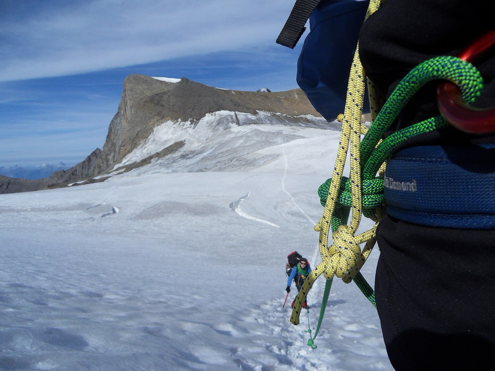

Your version of a bad day
- Boots off at high camp, toes like wax. They’re frozen, and the stove is right there. If those toes could refreeze on the descent, thawing them is the worst move on the mountain: frozen tissue walks, refrozen tissue doesn’t.
- Your strongest partner sits down in the snow. He’s past tired, into clumsy and quiet, and says he just needs a minute. Telling exhaustion from hypothermia takes an exam, not a guess — and the answer decides whether the team climbs, camps, or turns around.
- The headache that gains altitude. A teammate’s headache worsens with every camp, and now he’s stumbling on flat ground. Naming it is beyond this course — the response isn’t: stop going up, start going down, and don’t send him down alone.
Start here
All 15 lessons are worth your time, but this order front-loads what your world serves up:
- Cold Injuries — the refreeze rule alone is worth the whole lesson
- Patient Assessment — the difference between wrecked and dying is an exam
- Musculoskeletal Injuries — cramponed feet and loaded packs break ankles the ordinary way
- Evacuation — descent is the treatment for half of what goes wrong up high
- Kits & Preparation — a kit you can open and use in mittens
Then pressure-test it
Interactive scenarios — one decision at a time, tempting mistakes included, debrief at the end:
- Leave It Frozen — the hardest right answer in cold medicine
- The Burrito — packaging a cold patient who can’t help you do it
- Two Go, One Stays — spending people carefully when the route home is long
The certification question, honestly. “Wilderness First Aid” isn’t a regulated credential. No government body defines what a WFA card means — it means whatever the company that printed it says it means. What counts in front of a patient is whether you can do the work. This course teaches the work, free, and issues a record of completion — not a certificate, and we won’t pretend otherwise. Expedition and altitude medicine have their own paid courses, and guide services on big peaks generally require a WFR from a recognized provider; this record of completion is neither. It’s the base layer that lets the paid course spend its hours on hands-on skill instead of vocabulary. If nobody requires you to hold a card, what you need are the skills, not the laminate.
What this is
Fifteen lessons, a 40-question knowledge check, sixteen practice scenarios, a printable field reference card, and a kit checklist. Free, no account, nothing recorded about you, source on GitHub. It teaches decision-making, not hands-on skill — practice the hands-on parts on a real, padded, complaining friend.